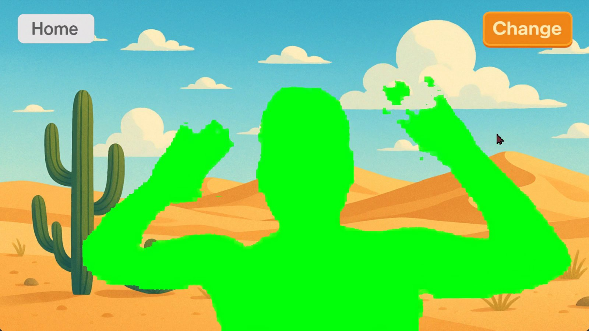

2025 · 몸으로 하는 놀이 콘텐츠
트래킹 프로젝트
카메라 앞에서 몸을 움직이면 캐릭터가 따라 움직이고, 그림이 지워지고, 여행지 배경 속으로 들어가는 트래킹 놀이 모음과 요리 체험입니다.

스윙크 개발팀 인턴으로 일하며 몸 트래킹 기술로 만든 놀이 콘텐츠입니다. 별도의 장비 없이 카메라 하나로 관람객의 몸을 추적해, 아이부터 어른까지 화면 앞에서 바로 몸을 움직여 즐길 수 있게 했습니다.
활동 놀이 · 메뉴에서 골라 하는 놀이 모음입니다. Skeleton과 Astronaut는 3D 해골과 우주인이 관람객의 자세를 그대로 따라 하고, Find My Friend는 손을 휘저어 가려진 그림을 지우며 숨은 동물을 찾고, Travel Map은 사람 영역만 분리해 사막 같은 여행지 배경 속에 합성합니다. 과일 자르기와 풍선 터뜨리기도 메뉴에 들어 있습니다.
쿠킹 트래킹 · 손 움직임을 추적해 화면 속 칼로 도마 위 재료를 써는 요리 체험입니다.
박물관 전시용 체험은 AI 한의사와 혈자리 체험에 정리했습니다.